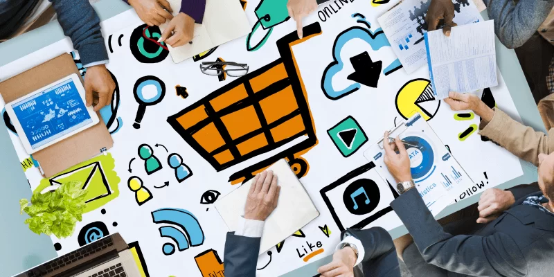

.png)
Impacto de las Tecnologías Web en la Sociedad y los Negocios
Internet es una red de computadoras interconectadas a nivel mundial que hacen cálculos y se relacionan entre sí usando un lenguaje universal. Esto es interesante porque, en el siglo XXI, el internet está cada vez más presente en la vida diaria.
Transformación de la Sociedad
- Acceso a la Información: Las tecnologías web han democratizado el acceso a la información. Ahora, cualquier persona con conexión a internet puede acceder a una cantidad ilimitada de conocimiento en cuestión de segundos. Esto ha empoderado a individuos y comunidades al facilitar el aprendizaje continuo y el acceso a recursos educativos.
- Comunicación Global: Plataformas como redes sociales, correos electrónicos y aplicaciones de mensajería han acercado a personas de diferentes partes del mundo. Esto ha promovido la colaboración internacional, el intercambio cultural y la formación de comunidades globales en torno a intereses comunes.
- Cambio en la Cultura y el Comportamiento: Las redes sociales y los medios digitales han influido profundamente en la cultura contemporánea. Desde cómo nos informamos hasta cómo nos entretenemos, estas tecnologías han moldeado nuestras interacciones diarias y nuestras percepciones del mundo.
Aplicaciones y servicios
| Servicio | Aplicación |
|---|---|
| Buscar información | |
| Comprar | Amazon o Mercado Libre |
| Entretenimiento | Netflix, TikTok o YouTube |
| Jugar videojuegos | Steam |
| Comunicación | Facebook o WhatsApp |
Recuperado de: http://alex-negocios1.over-blog.com/1-5-negocios-por-internet.html
¿Qué aplicaciones traen el uso de tecnología?
La tecnología es un punto demasiado importante para los negocios modernos. Estos son algunos de los usos que tienen:
- Colaboración y acceso: Durante la pandemia del coronavirus, muchas empresas optaron por iniciar con el trabajo remoto gracias a herramientas como Zoom o Teams, permitiendo que muchas personas puedan trabajar desde la comodidad de su casa.
- Almacenamiento: Cada vez son más y más empresas las que se suman a ya no usar el formato físico para papeleo y pasarse al almacenamiento en la nube, ahorrando tiempo, espacio y dinero.
- Ciberseguridad: Toda empresa tiene información privada que desea guardar. También existen muchos hackers que buscan acceder a esto para perjudicar. En ese caso entran los expertos en ciberseguridad que cuidan la integridad de los datos.
- Aplicaciones móviles: Los teléfonos móviles son la sensación y tendencia en la actualidad, y todas las empresas desean tener una aplicación que los identifique y dé un acceso más fácil a sus usuarios.
“Personas creando un modelo para negocio”
Recuperado de: https://murciaeconomia.com/art/87415/impacto-de-la-tecnologia-en-las-empresas
Desafíos y Consideraciones Éticas
A pesar de sus beneficios, el impacto de las tecnologías web también plantea desafíos significativos. Estos incluyen preocupaciones sobre la privacidad de los datos, la proliferación de noticias falsas, la adicción a las redes sociales y la brecha digital entre quienes tienen acceso a la tecnología y quienes no.
En conclusión, las tecnologías web han revolucionado la manera en que vivimos y hacemos negocios. Su influencia continúa expandiéndose, creando oportunidades sin precedentes y desafíos que requieren un enfoque cuidadoso y ético. Para aprovechar al máximo su potencial transformador, es crucial abordar estos desafíos con políticas y regulaciones adecuadas que promuevan un uso responsable y equitativo de estas herramientas poderosas.
Referencias
United Nations. (n.d.). Influencia de Las Tecnologías digitales | naciones unidas. United Nations. https://www.un.org/es/un75/impact-digital-technologies
Equipo editorial, E. (2023, November 19). Internet - concepto, Tipos, servicios, Usos y Navegadores. Concepto. https://concepto.de/internet/
MurciaEconomía. (2022, July 27). Impacto de la Tecnología en Las Empresas. MurciaEconomía: El periódico económico regional. https://murciaeconomia.com/art/87415/impacto-de-la-tecnologia-en-las-empresas